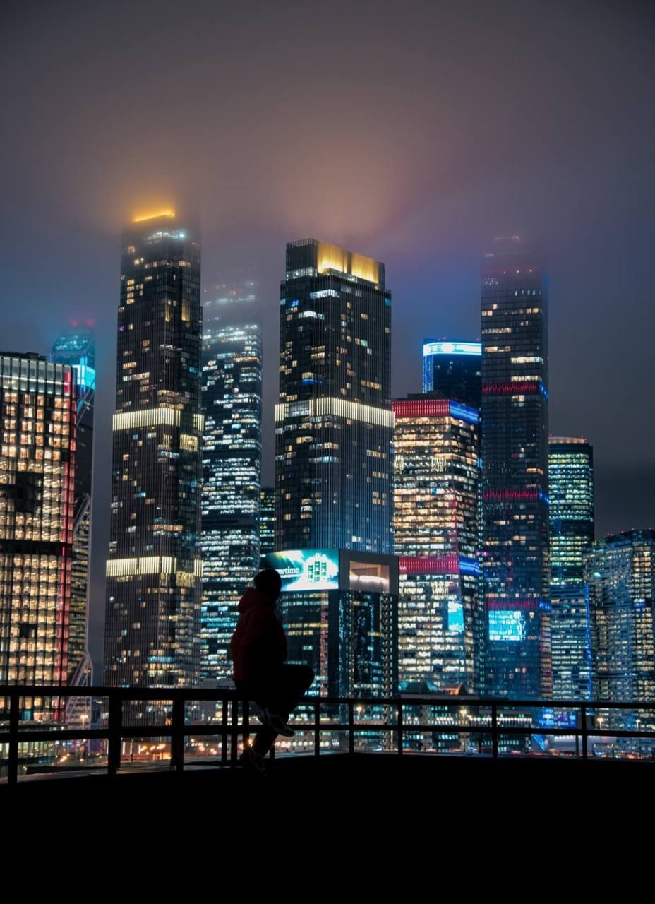

Сити вблизи
Крыша «Шелепиха 9 этажей»
Невысокая крыша, с которой небоскрёбы Москва-Сити видны почти вплотную: ночью их огни занимают весь кадр.
Эту крышу мы сейчас не предлагаем — посмотрите другие в каталоге.
Что видно с этой крыши
Эта крыша берёт не высотой, а близостью. Всего девять этажей — но башни делового центра стоят так близко, что заполняют кадр целиком: видно отдельные окна, светящиеся ленты этажей и рекламные экраны на фасадах.
Ночью точка работает лучше всего: небоскрёбы превращаются в стену из огней, а человек на краю крыши читается тёмным силуэтом на этом фоне. Именно так снят наш единственный кадр с этой локации.
Из-за небольшой высоты здесь нет обзорной панорамы города — вся картинка сфокусирована на Сити.
Когда лучше приходить
После заката и ночью. Днём с девяти этажей вид обычный, вся ценность точки — в вечерней и ночной подсветке башен.
Кому подойдёт
Первый вариант для тех, кто побаивается высоты: девять этажей воспринимаются спокойно, а картинка всё равно эффектная. Подойдёт и для ночной съёмки силуэтов на фоне огней.
Как попасть
Подняться можно только вместе с сопровождающим: мы встречаемся у дома в назначенное время, поднимаемся и коротко объясняем правила на площадке. Точный адрес и точку встречи присылаем после подтверждения записи — заранее их не публикуем. Что взять с собой: удобную нескользящую обувь и тёплый слой, вечером на высоте прохладнее, чем на улице. Подробнее — в гиде «Как попасть на крышу в Москве».
FAQ
Вопросы про эту крышу
Это правда невысоко?
Да, девять этажей — самая низкая крыша в нашем каталоге. Если высота пугает, начинать лучше с неё.
Почему тогда Сити такой большой в кадре?
Потому что крыша стоит близко к деловому центру. Высота небольшая, а башни рядом — поэтому они занимают почти весь кадр.
Есть ли отсюда панорама города?
Нет, обзорной панорамы с такой высоты не будет. Эта точка — про башни Москва-Сити крупным планом, а не про вид на весь город.
Над городом